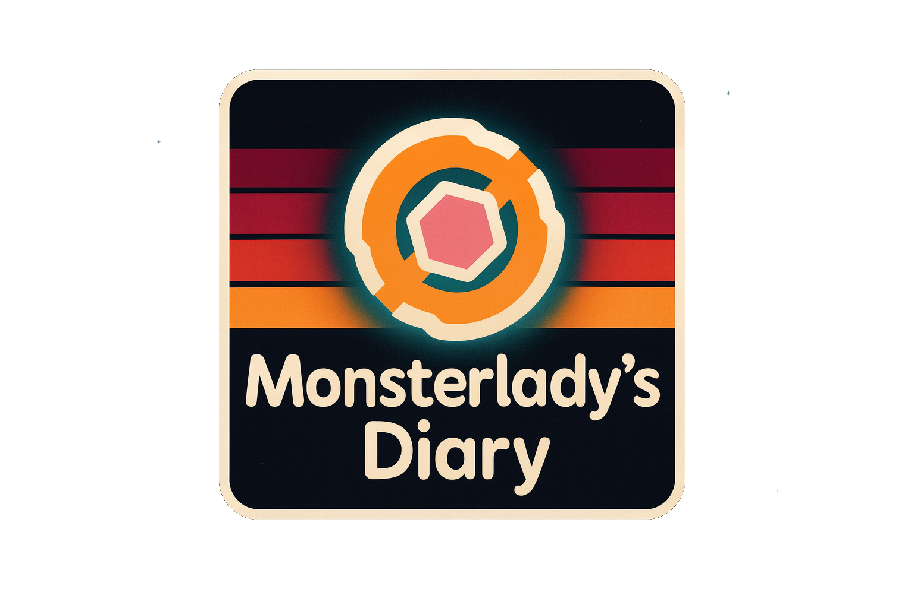

Nimgimli laments North Carolina's lingering summer while recounting his gaming adventures in The Outer Worlds and Vampire Survivors.



Emily dives into a September music recap, with a strong mix of new finds and old favorites, while navigating the AI music frontier.
Nik Kantar
Nik reflects on stepping back from organizing PyBeach 2025, celebrating its success and the vibrant community it gathered.
Nik reflects on stepping back from organizing PyBeach 2025, celebrating its success and the vibrant community it gathered.
Tofutush dives into a math puzzle about Thanos' ability to annihilate populations with a snap, concluding that it would take 34 snaps to ensure earth's extinction.